الدوري الإيطالي الدرجة الأولى(بالإيطالية: Serie A) ويعرف بسيريا أ اختصارا وبدوري سيريا أ تيم (Seria A TIM) لدواعي تسويقية، هو المسابقة الأعلى درجة من دوري كرة القدم للأندية المحترفة في إيطاليا، ويعد من نخبة الدوريات على مستوى العالم، عرف انطلاقته الأولى سنة 1898.أطلق الاتحاد الإيطالي لكرة القدم مباشرة بعد تأسيسه في 26 مارس 1898 مسابقة الدوري الإيطالي، وأقيمت النسخة الأولى بمشاركة أربع فرق في يوم واحد على أرضية ترابية بفيلودروم أومبرتو الأول بتورينو أمام حضور جماهيري لا يتجاوز 150 شخصا، ليشهد الدوري الإيطالي منذئذ تغييرات جذرية على نظامه الأساسي، ويسجل نجاحات كبرى لأنديته على الساحة القارية والدولية، وتطورا كبيرا في المتابعة الجماهيرية واستقطاب ألمع وأمهر نجوم كرة القدم في العالم حتى صار يوصف بجنة كرة القدم في ثمانينات القرن الماضي. ورغم تراجع صيته بعد فضيحة الكالتشيوبولي، إلا أنه تطور بشكل سريع في العشرية الأخيرة، ويحقق حاليا نموا هائلا للعائدات المالية التي ناهزت 2.5 مليار يورو في موسم 2018–19.
فريق انتر ميلان يفوز بالدوري الايطالي عام 2019 م
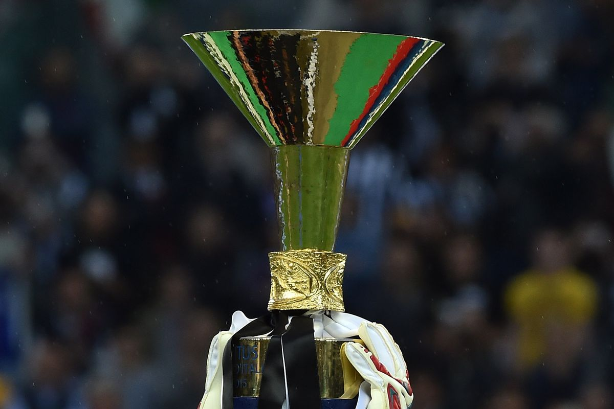كأس الدوري الايطالي
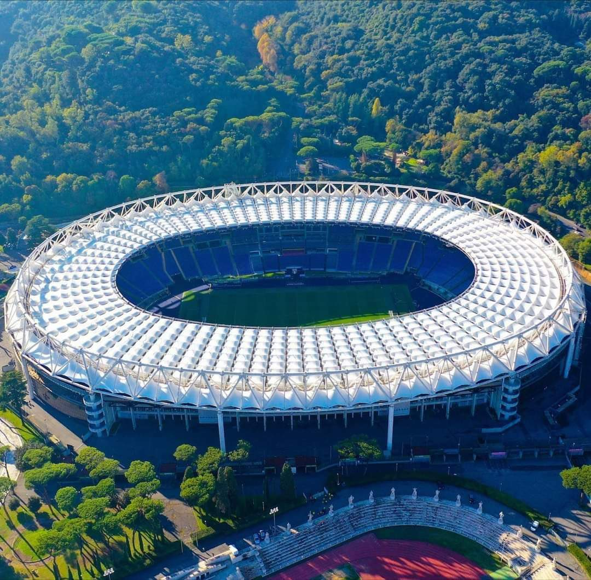ملعب الأوليمبيكو , معقل نادي روما
سنوات البطولة |
عدد الألقاب |
النادي |
| 1905، 1925–26، 1930–31، 1931–32، 1932–33، 1933–34، 1934–35، 1949–50، 1951–52، 1957–58، 1959–60، 1960–61، 1966–67، 1971–72، 1972–73، 1974–75، 1976–77، 1977–78، 1980–81، 1981–82، 1983–84، 1985–86، 1994–95، 1996–97، 1997–98، 2001–02، 2002–03، 2004–05، 2011–12، 2012–13، 2013–14، 2014–15، 2015–16، 2016–17، 2017–18، 2018–19، 2019–20 |
36 لقباً |
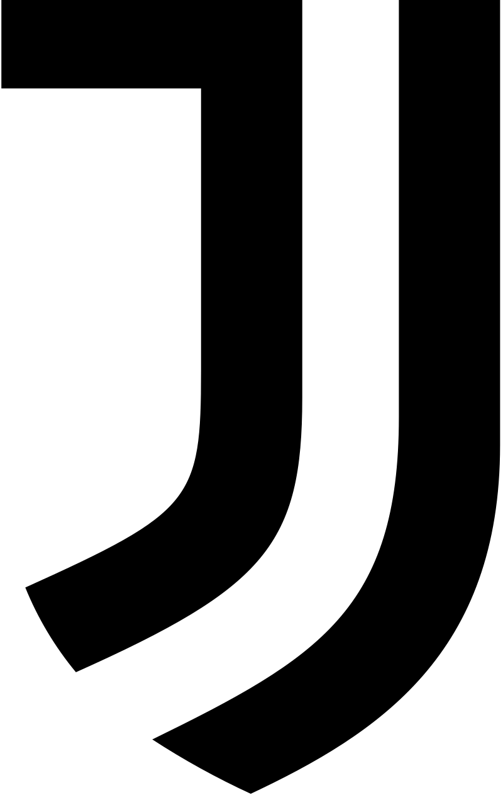
يوفنتوس |
| 1909–10، 1919–20، 1929–30، 1937–38، 1939–40، 1952–53، 1953–54، 1962–63، 1964–65، 1965–66، 1970–71، 1979–80، 1988–89، 2005–06، 2006–07، 2007–08، 2008–09، 2009–10، 2020–21 |
19 لقباً |
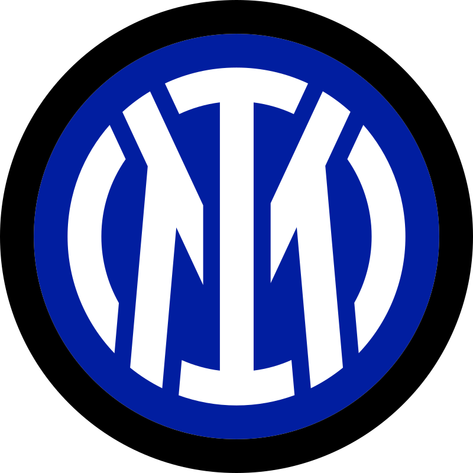
انتر ميلان |
| 1901، 1906، 1907، 1950–51، 1954–55، 1956–57، 1958–59، 1961–62، 1967–68، 1978–79، 1987–88، 1991–92، 1992–93، 1993–94، 1995–96، 1998–99، 2003–04، 2010–11 |
18 لقباً |
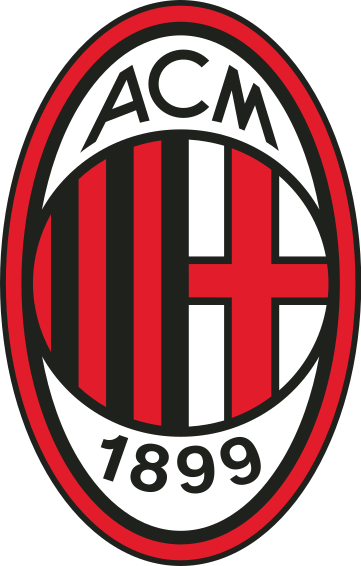
ايه سي ميلان |
| 1898، 1899، 1900، 1902، 1903، 1904، 1914–15، 1922–23، 1923–24 |
9 القاب |
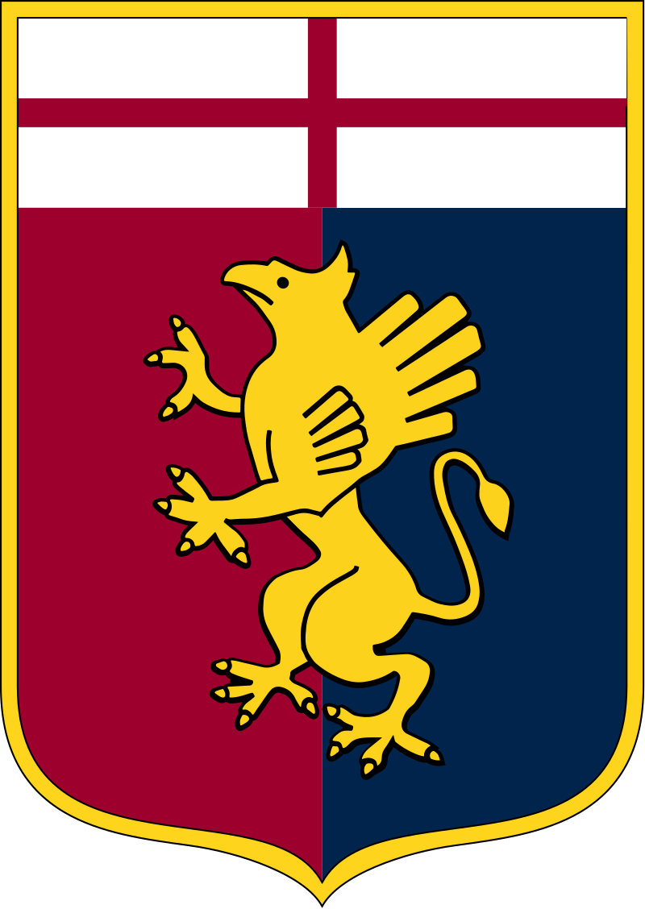
جنوة |
| 1926–27، 1927–28، 1942–43، 1945–46، 1946–47، 1947–48، 1948–49، 1975–76 |
7 القاب |
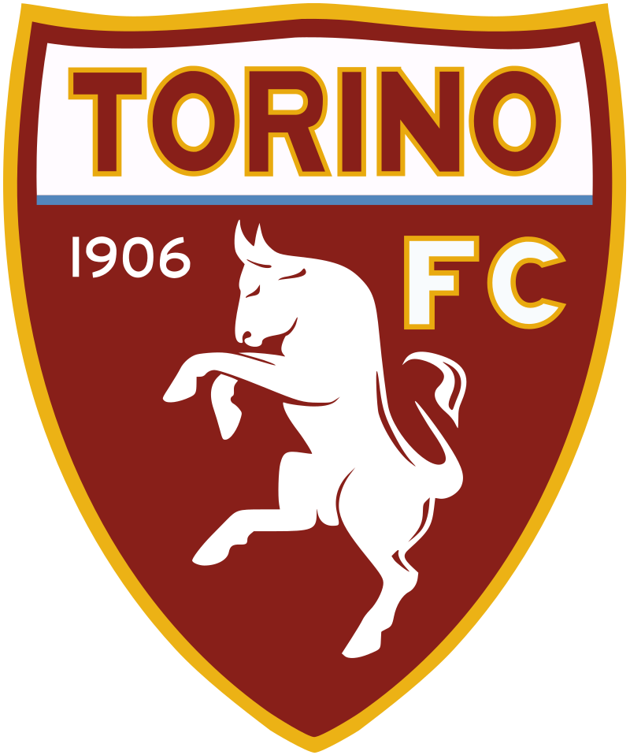
تورينو |
| 1924–25، 1928–29، 1935–36، 1936–37، 1938–39، 1940–41، 1963–64 |
7 القاب |
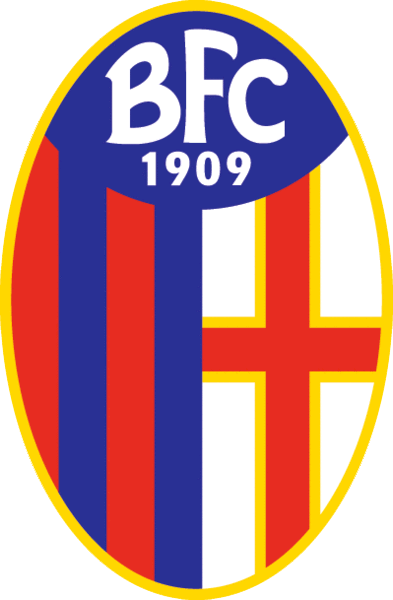
بولونيا |
| 1908، 1909، 1910–11، 1911–12، 1912–13، 1920–21، 1921–22 (CCI) |
7 القاب |
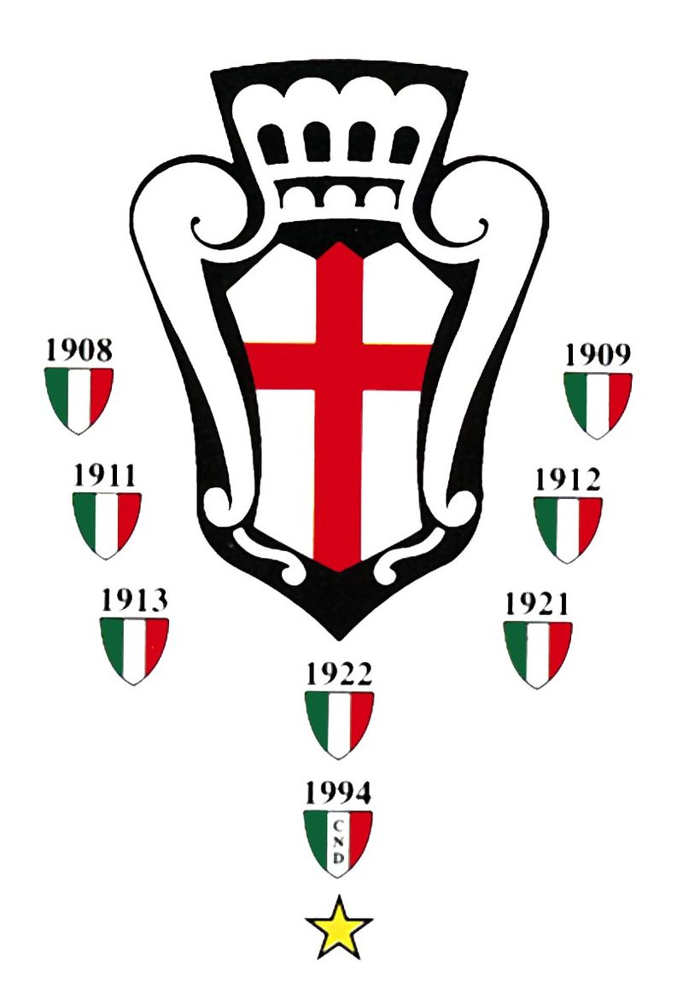
برو فيرتشيلي |
| 1941–42، 1982–83، 2000–01 |
3 القاب |
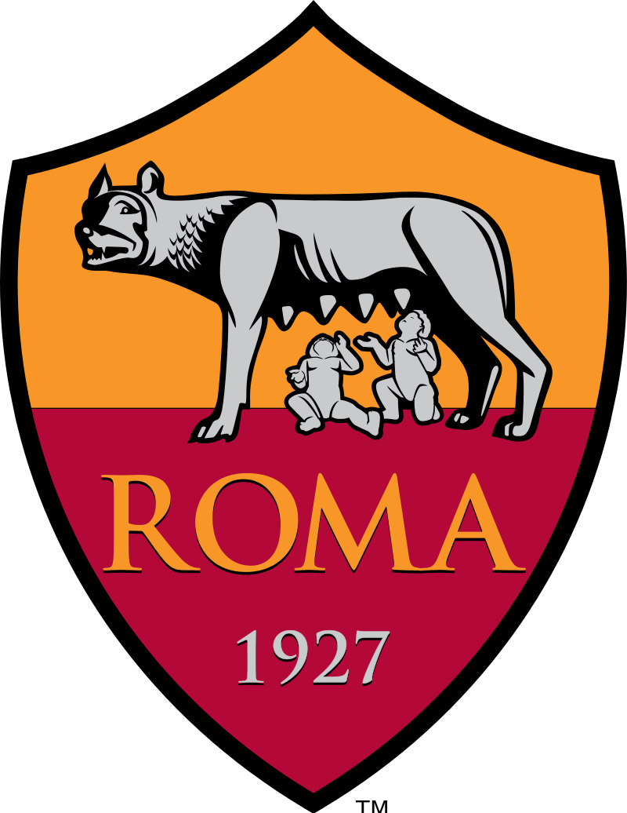
روما |
| 1986–87، 1989–90 |
لقبان |
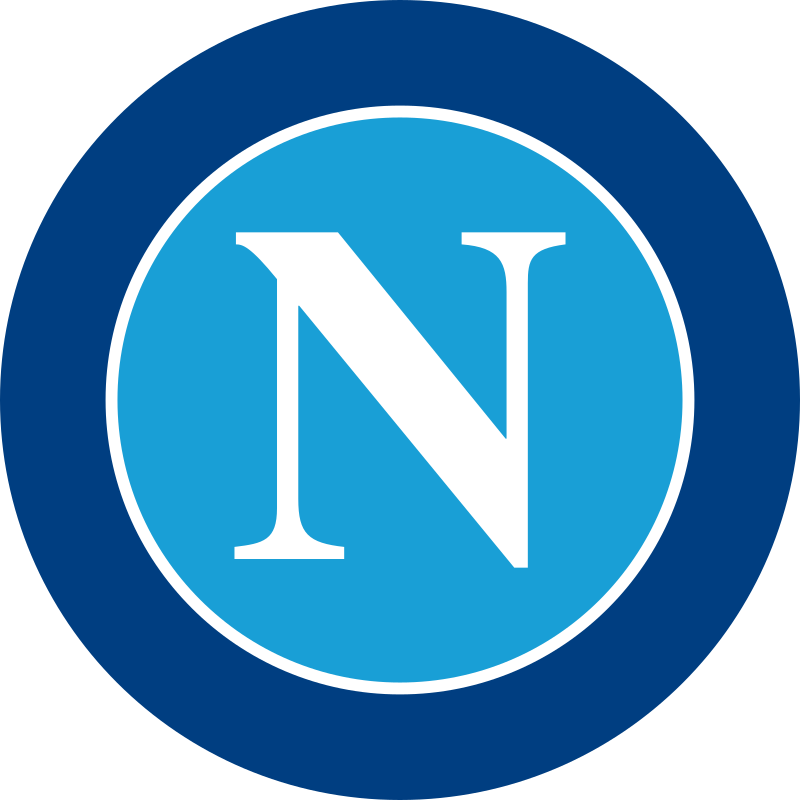
نابولي |
كريستيانو رونالدو دوس سانتوس أفيرو (تلفظ برتغالي: /kɾiʃˈtjɐnu ʁoˈnaɫdu/؛ مواليد 5 فبراير 1985) المعروف بـ كريستيانو رونالدو. هو لاعب كرة قدم برتغالي يلعب مهاجمًا لنادي يوفنتوس في الدوري الإيطالي ومنتخب البرتغال. غالبًا ما يُعتبر أفضل لاعب في العالم ويعتبره الكثيرون من أعظم اللاعبين في تاريخ كرة القدم، حصل رونالدو على خمسة كرات ذهبية كأكثر لاعب أوروبي، وهو أول لاعب يفوز بأربعة أحذية ذهبية أوروبية. وقد فاز بـ 32 بطولة رسمية في مسيرته، من ضمنها سبعة ألقاب دوري، وخمسة ألقاب في دوري أبطال أوروبا ولقب واحد في بطولة أمم أوروبا ولقب البطولة الافتتاحية لدوري الأمم الأوروبية. يحمل رونالدو الرقم القياسي لأكبر عدد من الأهداف (130) والصناعة (41) في تاريخ دوري أبطال أوروبا. وهو أحد اللاعبين القلائل الذين شاركوا في أكثر من 1000 مباراة رسمية في مسيرتهم وسجل أكثر من 780 هدف رسمي مع الأندية والمنتخب. ولد ونشأ في جزيرة ماديرا البرتغالية، وبدأ مسيرته في نادي سبورتينغ لشبونة قبل أن يوقع مع مانشستر يونايتد بسن الثامنة عشر عامًا في عام 2003. بعد فوزه ببطولته الأولى، كأس الاتحاد الإنجليزي، خلال موسمه الأول في إنجلترا، ساعد اليونايتد على الفوز بثلاثة ألقاب متتالية في الدوري الإنجليزي الممتاز وبطولة واحدة في دوري أبطال أوروبا وبطولة واحدة في كأس العالم للأندية. وفي سن 23 حصل على جائزة الكرة الذهبية وجائزة أفضل لاعب كرة قدم في العالم من الفيفا. في عام 2009، أصبح رونالدو أغلى لاعب في تاريخ كرة القدم عندما انتقل من مانشستر يونايتد إلى ريال مدريد في صفقة انتقال بلغت قيمتها 80 مليونجنيه إسترليني (94 مليون يورو/131.6 مليون دولار أمريكي). هناك، فاز رونالدو بـ 15 لقبًا، من ضمنها لقبا دوري ولقبا كأس وأربعة ألقاب دوري أبطال أوروبا، وأصبح الهداف التاريخي للنادي. بعد انضمامه إلى مدريد، أنهى رونالدو في المركز الثاني في جائزة الكرة الذهبية ثلاث مرات، خلف ليونيل ميسي– منافسه الوظيفي المحسوس – قبل أن يفوز متتاليين بالكرة الذهبية من 2013 و2014 ومرة أخرى من 2016 و2017. بعد فوزه بلقب دوري أبطال أوروبا للمرة الثالثة على التوالي في عام 2018، أصبح رونالدو أول لاعب يفوز باللقب خمس مرات في النسخة الحديثة. في عام 2018، وقع مع يوفنتوس في صفقة انتقال بقيمة 100 مليون يورو (88 مليون جنيه إسترليني)، كأعلى مبلغ انتقال يُدفع للاعب تجاوز سن الثلاثين، وهو أعلى مبلغ يدفعه أي نادي إيطالي عبر التاريخ. فاز بالدوري الإيطالي في أول موسمين له مع النادي.